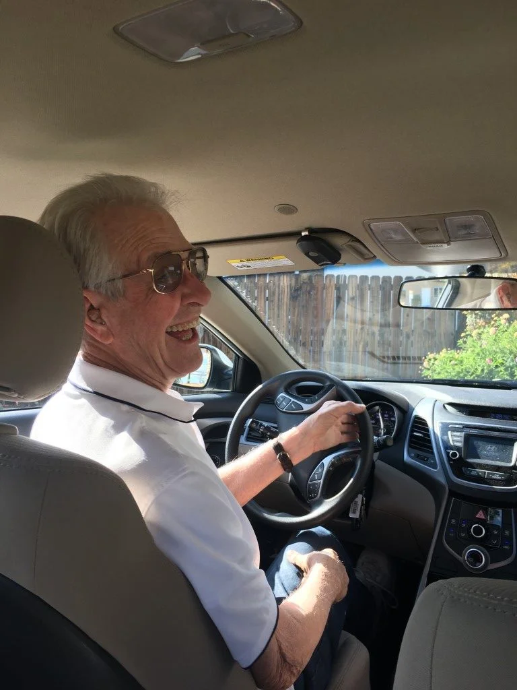
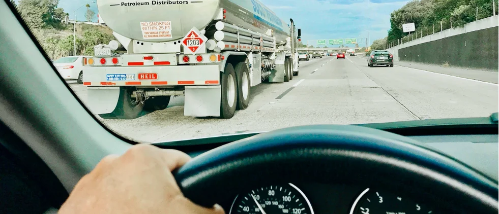
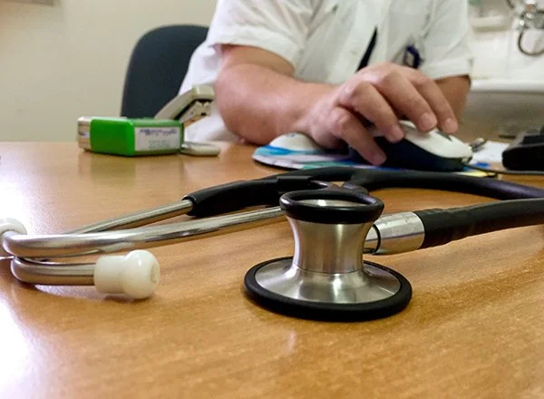

Rijschool en rijangstbegeleiding in Apeldoorn
Met vertrouwen achter het stuur.
Persoonlijke rijlessen voor nieuwe bestuurders, opfrissers en mensen met rijangst of een extra ondersteuningsvraag. Stap voor stap, in jouw tempo.
5 sterren op Google, uit 6 reviews

Waar sta jij nu?
Iedereen komt met een eigen vraag. Kies wat bij je past, of bel gewoon even. Samen kijken we welke begeleiding je nodig hebt.
Alle lessen zijn individueel, in een auto met dubbele bediening. Je kiest uit een schakelauto, automaat of aangepaste automaat.
Ik wil mijn rijbewijs halen Voor nieuwe bestuurders, schakel of automaat.
Persoonlijke rijlessen, afgestemd op jouw manier van leren. Iedere rijopleiding begint met een proefles: we maken kennis, bespreken je wensen en kijken daarna welk lespakket bij je past.
Zo verloopt je rijopleidingIk wil weer met vertrouwen rijden Rijangst, opfrislessen of begeleiding na een vervelende ervaring.
Lang niet gereden, of onzeker over je rijstijl? In de eerste afspraak bespreken we waar je tegenaan loopt. Daarna kies je losse lessen naar behoefte of het basispakket met het boekje "opfriscursus theorie".
Veel kilometers en wil je rustiger rijden? Ook dan kun je bij DriveCare terecht voor een stressgereduceerde rijstijl.
Ik heb extra begeleiding nodig Autisme, ADHD, dyslexie, NAH of aangepast rijden.
Niet iedereen leert op dezelfde manier. We passen de les aan op hoe jij informatie verwerkt, met rust, structuur en duidelijke uitleg. Ook na ziekte of een ongeval kun je bij DriveCare opnieuw leren rijden.
Meer over aangepast rijden en het CBR
Stap voor stap, in jouw tempo.
Maak kennis met Mireille
“Iedereen leert anders.”
Daarom geloof ik niet in een standaard aanpak.
Met mijn achtergrond als therapeut, rijinstructrice en voormalig ziekenverzorgster kijk ik niet alleen naar wat er achter het stuur gebeurt, maar ook naar de persoon die erin zit.
Of je nu je eerste rijbewijs wilt halen, rijangst wilt overwinnen of extra begeleiding nodig hebt: samen kijken we naar wat jij nodig hebt om met vertrouwen en plezier de weg op te gaan.
Bel Mireille: 06 23824576Jouw rijbewijs begint hier
Persoonlijke rijlessen in een schakelauto of automaat. Zo werken we samen naar een veilige en zelfverzekerde start op de weg.
-
1
Kennismaken
Je begint met een proefles. We maken kennis, bespreken je wensen en kiezen samen een lespakket dat bij je past.
-
2
Leren op jouw manier
Iedereen leert in een eigen tempo. De lessen stemmen we af op jouw situatie en doelen, schakel of automaat.
-
3
Goed voorbereid
Eerst haal je je theoriecertificaat. Zelfstandig met online lesmateriaal, of via de klassikale theoriecursus van DriveCare.
-
4
Praktijkexamen
Als jij en je instructeur er klaar voor zijn, plannen we het examen. Last van spanning? Dan kijken we samen naar een tussentijdse toets of een faalangstexamen.
Na ziekte, een ongeval of een oproep van het CBR
Je rijbewijs, je vrijheid, is ineens niet meer vanzelfsprekend. Misschien volgt er een onderzoek naar je rijvaardigheid of rijgeschiktheid. Dat is een spannende tijd. DriveCare helpt je weer op weg.
Het CBR kan adviseren om lessen te volgen bij een gespecialiseerde rijschool, bijvoorbeeld om anders te leren kijken of te rijden met aanpassingen. Die lessen verzorgt DriveCare. We weten waar de deskundige van het CBR op let en bereiden je daar goed op voor. Overleg met je specialist is mogelijk.

Compensatie- en techniektrainingen bij
- Oogaandoeningen
- Lichamelijke beperkingen, in een aangepaste automaat
- Verschillende vormen van dementie
- Aandoeningen na een hartinfarct
- De ziekte van Parkinson
- Niet-aangeboren hersenletsel (NAH)
Staat jouw situatie er niet bij? Neem gerust contact op, het maatwerk gaat verder dan deze lijst.
Lesauto's
Aanpassingen zoals handgas, handrem, gas links en richtingaanwijzer rechts. Altijd met dubbele bediening.
Wat leerlingen over Mireille zeggen
5 sterren op Google, uit 6 reviews
“Bij DriveCare aangepast leren autorijden ivm een verlamde rechter lichaamshelft en nu geslaagd voor de rijtest van het CBR. Ik werd hierbij op een zeer prettige manier in begeleid door Mireille van der Vliet. Zij coachte mij op een vriendelijke, maar zeer consequente wijze in het aanleren van het eenhandig sturen …”
“Na mijn ongeluk waarbij ik één arm niet kan gebruiken, kwam ik terecht bij rijschool Drive Care in Apeldoorn voor rijlessen éénhandig rijden. Met het nodige geduld kreeg ik deze lessen van Mireille. Zij stelde mij op mijn gemak en bouwde de lessen steeds verder uit …”
“Super goede ervaring met Mireille. Ze geeft je vertrouwen waar nodig, is sociaal en ik heb mijn rijlessen afgesloten met een geslaagde rijtest.”
“Mireille heeft me super geholpen bij het behalen van mijn rijtest. Ze is ontzettend geduldig en komt met innovatieve oplossingen, zoals de Superpatch, waar ik zelf nog nooit van had gehoord. Naast haar expertise in het praktische deel van het autorijden, heeft ze ook veel oog voor de persoon achter het stuur …”
Plan een proefles
Maak kennis met DriveCare en ontdek welke begeleiding bij je past. Bellen is het snelst.
Bel 06 23824576- info@drivecare.nl
- Adres
- Bariumstraat 32
7334 AK Apeldoorn - Openingstijden
-
Maandag 08:00 tot 21:30 Dinsdag 08:00 tot 18:00 Woensdag 08:00 tot 18:00 Donderdag 08:00 tot 18:00 Vrijdag 08:00 tot 18:00 Zaterdag 08:30 tot 13:00 Zondag Gesloten